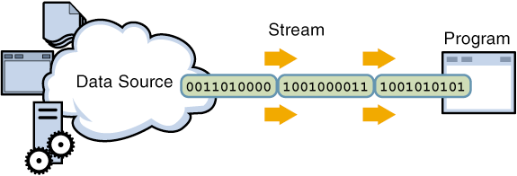
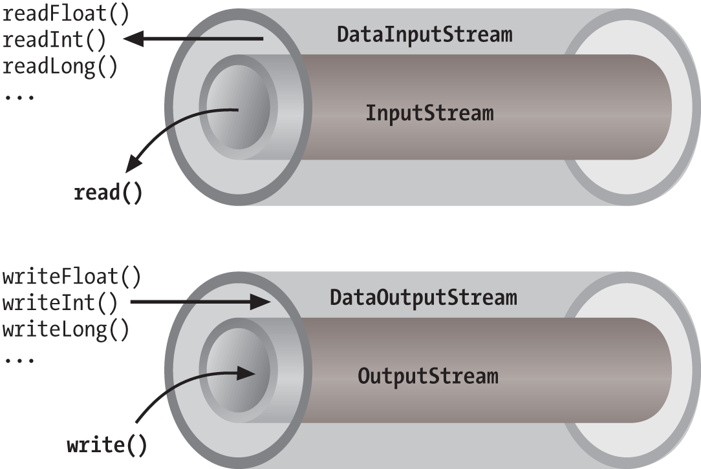

Προγραμματισμός ΙΙ: Διαχείρηση αρχείων


Προγραμματισμός ΙΙ
Διαχείρηση Αρχείων
Αρχεία
- Τρόπος μόνιμης αποθήκευσης δεδομένων.
- Για να γράψουμε ή να διαβάσουμε μέσα από αρχεία, χρησιμοποιούμε τη ροή εισόδου
και εξόδου (I/O streams)
Ροή Εισόδου και Εξόδου (I/O Streams)
Μία ροή (stream) αναφέρεται σε μια σειρά από ταξινομημένα δεδομένα που διαβάζονται από ή γράφονται σε ένα αρχείο.

Τρόποι διαχείρισης αρχείων (1)
**Byte Streams**: εισαγωή και εξαγωγή 8-bit ή 1 byte. Χρησιμοποιούνται για χαμηλού επιπέδου διαχείριση δεδομένων εισόδου και εξόδου. Η είσοδος και η έξοδος από ένα αρχείο βασίζεται σε bytes.
FileInputStream in = new FileInputStream("infile.txt");
FileOutputStream in = new FileOutputStream("outfile.txt");
Τρόποι διαχείρισης αρχείων (2)
**Character Streams**: αποτελούν “wrappers” των byte streams. Χρησιμοποιούν byte streams για χειρισμό δεδομένων εισόδου και εξόδου σε χαμηλό επίπεδο (low-level I/O), καθώς τα character streams χειρίζονται τη μετάφραση των χαρακτήρων σε bytes. Η είσοδος και η έξοδος σε και από ένα αρχείο βασίζεται σε χαρακτήρες.
FileReader in = new FileReader("infile.txt");
FileWriter in = new FileWriter("outfile.txt");
Τρόποι διαχείρισης αρχείων (3)
**Buffer Streams**: χρήσιμοποιούν _buffers_ στο διάβασμα (**read**) ή στο γράψιμο (**write**) αρχείων. Βοηθούν στην αποδοτικότητα των προγραμμάτων καθώς τα αιτήματα read/write δεν χειρίζονται κατευθείαν από το λειτουργικό σύστημα.
BufferedReader in = new BufferedReader(new FileReader("infile.txt"));
BufferedWriter out = new BufferedWriter(new FileWriter("outfile.txt"));
Τρόποι διαχείρισης αρχείων (4)
**Data Streams**: υποστηρίζουν δυαδική είσοδο και έξοδο (**binary Ι/Ο**) από πρωταρχικούς τύπους δεδομένων (**primitive data types**: boolean, char, byte, short, int, long, float, και double) καθώς και **String**.
DataOutputStream out = new DataOutputStream(new BufferedOutputStream(
new FileOutputStream(dataFile)));
DataInputStream in = new DataInputStream(new BufferedInputStream(
new FileInputStream(dataFile)));

Ανάγνωση αρχείου
Mε FileInputStream: διαβάζει ροές από bytes (π.χ. image data) αφού ανοίξει μια σύνδεση με το αρχείο.
Εγγραφή σε αρχείο
Με FileOutputStream: ανοίγει μια ροή για να γράψει δεδομένα σε ένα αρχείο.

This work is licensed under a Creative Commons Attribution-NonCommercial-ShareAlike 4.0 International License.